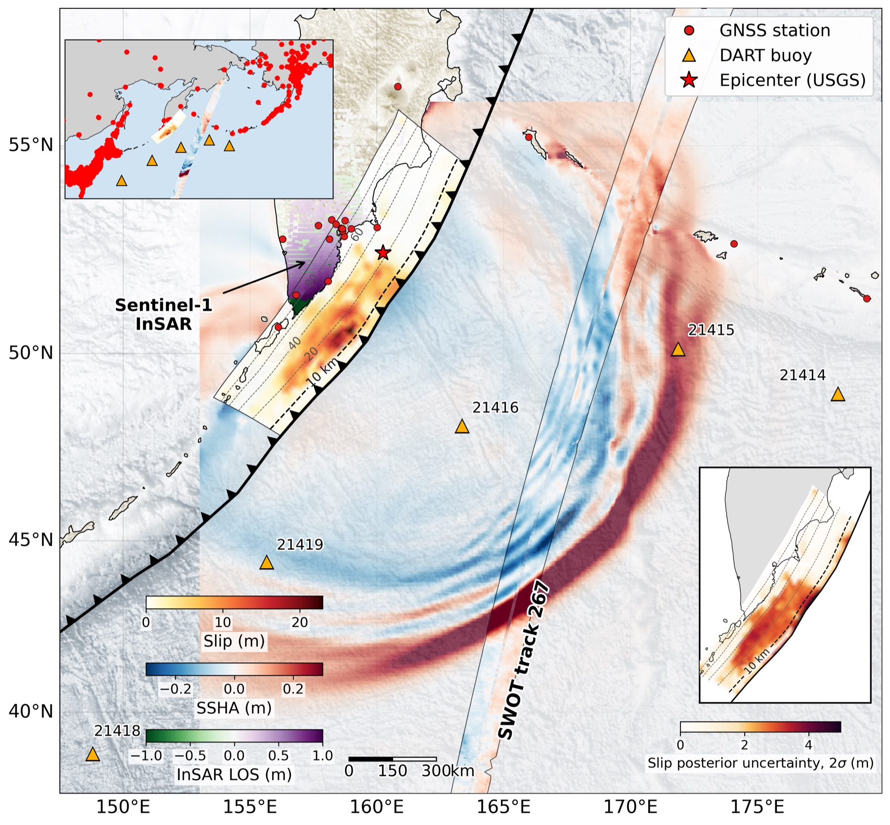

2025 · Mw 8.8 · Kamchatka
Manuscript in preparation
Localized trench breaching in the 2025 Kamchatka earthquake
The 2025 Kamchatka earthquake is the first great megathrust rupture observed by the SWOT wide-swath altimeter, yet published source models disagree on whether slip breached the trench. We jointly invert GNSS, InSAR, DART, and SWOT data in a hierarchical Bayesian framework, on a finite-element fault geometry.
The joint posterior concentrates a peak slip of 22.8 ± 2.6 m at 12–13 km depth (158.95°E, 50.58°N) and yields a localized trench-breaching segment between 51.2°N and 52°N, with near-zero shallow slip elsewhere along the trench.
